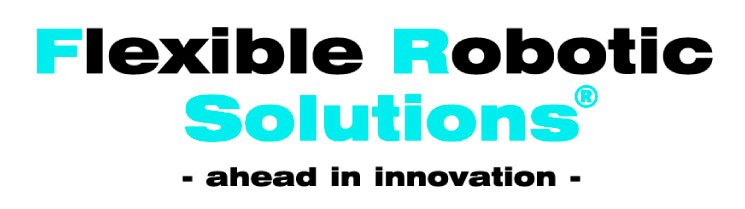
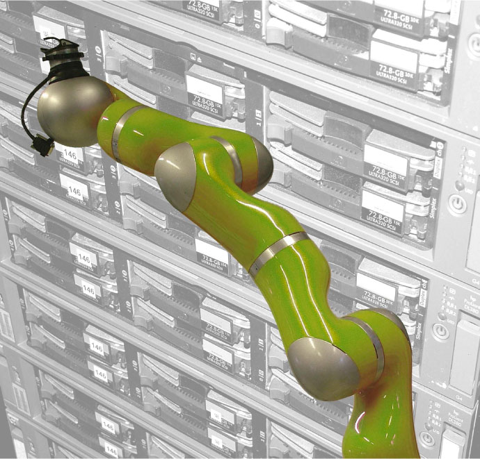
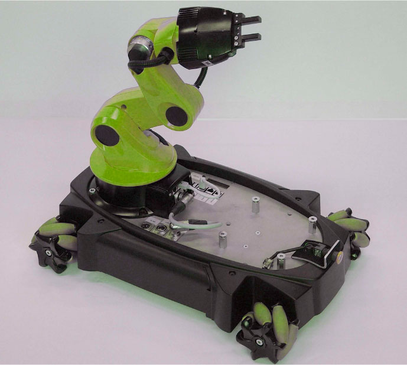
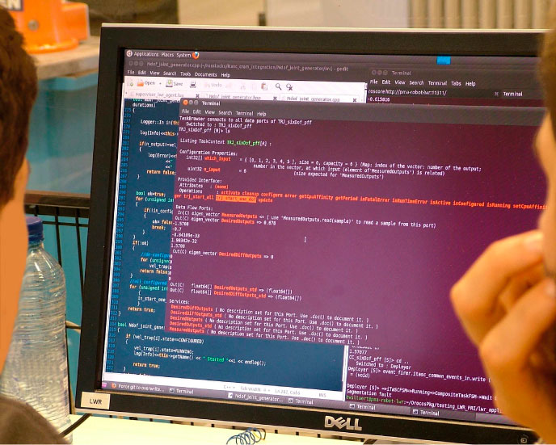

FLEXIBLE ROBOTIC SOLUTIONS© allow robots to work in a flexible way using abundant sensor information in a complex environment which requires close interaction with humans and/or other robot systems, and which is not always structured and predictable.
FLEXIBLE ROBOTIC SOLUTIONS©
- are real-time. Constraints related to the robot, the physical process, the environment, the human operator, etc. can be combined freely. The control system tries to satisfy them all as accurately as possible, or resolves conflicts between constraints. The constraint-based approach enables a smooth transition between teleoperation, shared control and fully autonomous control.
- handle on-line sensor information. Signals delivered simultaneously by multiple sensors of different nature (vision, force, distance, inertial measurements) are fused and fed to estimators which are configured automatically. The environment model can be updated, or 'calibrated', prior to starting the task execution, or can be updated continuously during the task execution.
- support local or global optimization. Example applications include time-optimal path following and time-optimal trajectory generation.
- have a strategic relationship with the PMA Robotics Research group at the Katholieke Universiteit Leuven (KU Leuven). Founded in 1974, this research group has experience with applications in space industry, energy sector, building industry and car assembly.




Contact Person
Mr Philippe Delforge
Technical / Commercial Manager
email: info@flexibleroboticsolutions.com
Tel: +32 3 886 58 15
Fax:+32 3 886 22 61
http://www.flexibleroboticsolutions.com
Rozenlaan, 26
B - 9111 Belsele
Belgium
Contact Person
Mr Philippe Delforge
Technical / Commercial Manager
email: info@flexibleroboticsolutions.com
Tel: +32 3 886 58 15
Fax:+32 3 886 22 61
http://www.flexibleroboticsolutions.com
Rozenlaan, 26
B - 9111 Belsele
Belgium